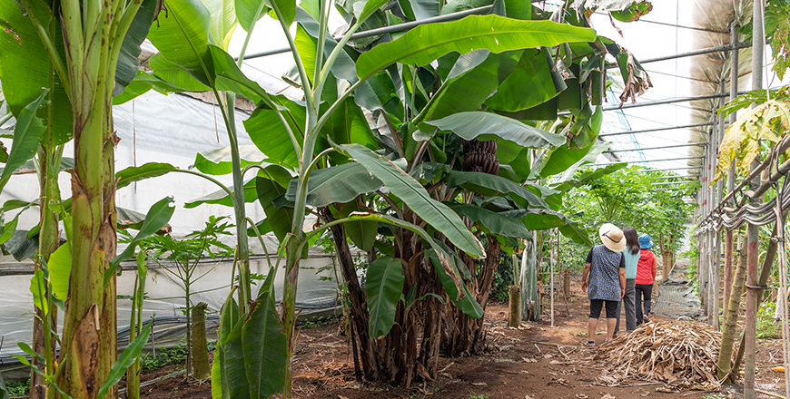

기획취재콘텐츠
- Home
- 제주라이프
- 기획취재콘텐츠
熱帯および亜熱帯作物産業のパイオニア(Pioneer) 2部새로운 글


熱帯および亜熱帯作物の6次産業化を先導する「ユジンファング」
2メートルを超えるバナナの木がぎっしりと立ち並ぶビニールハウスに入ると、木々にバナナ果樹がふさふさして収穫を待っている。他のハウスには長い葉っぱの間にパインアップルが育っていて、他のハウスにはサトウキビ、マンゴ、パパイヤなど多様な亜熱帯作物がいっぱい。露地に植えられたアロニアの木にはふさふさとアロニアの実がぶら下がっている。倉庫を兼ねた体験スペースの一角にあるショーケースにはバナナ、パインアップルなど亜熱帯作物で作ったジャムとお酢が陳列されている。これが済州バナナの復興を共にしてきた農場、ユジンファングの風景である。

- ユジンファング農場ハウスの内部 ⓒユン・ソジン -
ユジンファング代表、キム・スニルさんは2012年に農業技術院からもらってきたバナナの苗種を実験栽培して熱帯果物農場をスタートした。実験栽培したバナナを食べてみたら市販されるものより味と香りが深かった。輸入された熱帯果物を食べるたびに体調を崩したのだが、薬品と防腐処理をしていない環境にやさしいバナナを食べたら、余計敏感で脆弱だった身体でも大した問題を起こさず平気になれた。健康な果物を探す消費者には十分魅力としてアピールできると判断したキム代表は、2016年にバナナの木600株を植えて2016年から本格的にバナナ生産をスタートした。
環境にやさしいバナナの味を消費者に伝えるのが最優先の価値だったので、ユジンファングでは身体に良くない薬剤を一切使っていない。しかし薬品を使わずに栽培しようとすると害虫が問題った。とくに熱帯作物は他の作物に比べ害虫やクモの巣が多い。キム代表は夫と一緒に環境にやさしいバナナの栽培施設問題を解決するために知恵を絞りだした結果「サンガッコビニールハウス」が生まれた。
- サンガッコビニールハウスで環境にやさしい手法で栽培されるバナナ ⓒユン・ソジン -
両端を密閉して天井を三角の形にし、熱い空気が上昇する原理を利用して自動で熱交換と内部循環が行われるように設計した。熱交換と内部循環によりハウス内の上部と下部の温度差が縮まった。背の高いバナナの木を通常のハウスに植えたら上部は熱を過度に受けて葉っぱが傷み、下部はしっかり熱を受けることができなかったため葉っぱが成長できなかった。それを「サンガッコビニールハウス」で温度差を減らしたら、上部と下部共にバナナが育ちやすい温度を維持することができ、両端に出入りしていた害虫の流入も減ってきた。「サンガッコビニールハウス」は、害虫の流入を防いで作物栽培の効果を証明、2016年に特許を登録することができた。正式名称は「換気用三角トップループをもつビニールハウス」だ。
韓国産バナナの栽培に成功してからはパパイヤを植えた。野菜用のグリーンパパイヤは活用度が高く直接取引でかなりの量が販売された。韓国で熱帯および亜熱帯作物が成功できると判断してからは本格的に実験栽培棟を建設した。イエローパパイヤ、サトウキビ、パインアップルなど多様な亜熱帯作物の栽培実験を独自で実施し、商品性が高く栽培技術が安定した作物は本格的な栽培を展開する。最近栽培と販売を開始したパインアップルがその代表格だといえる。
- ユジンファング農場で栽培されるグリーンパパイヤ ⓒユン・ソジン -
また、熱帯および亜熱帯作物の消費量を増やし一般に広めるために体験プログラムを運営し、加工品の開発と販売もスタートした。本格的な熱帯および亜熱帯作物の6次産業を開始したユジンファングは、31,404㎡(9,500坪)規模の農場では直接バナナ、パパイヤ、アロニア、パインアップルなどを収穫し、それらの作物でジャムやお酢を作ってみる体験もできる。体験場の一角ではアロニア、バナナ、パインアップルなどの収穫物で作ったジャムとお酢を販売している。それだけでなくデコポン、みかん、青みかんでジャムやお酢、手作りのエキスを作って体験場やオンラインの直接取引マーケットで販売する。バナナでは半乾燥チップスを作った。
- ユジンファングが作るジャムとお酢などの亜熱帯果物の加工食品 ⓒユン・ソジン -
横にスライスするとバナナの甘みがより感じられます。半乾燥バナナチップスは甘みのある健康おやつとして人気が高いです。ジャムとお酢の体験客もこつこつと来られます。体験客の満足度も高い方です
- キム・スニル、ユジンファング代表
キム・スニル代表が熱帯および亜熱帯作物を捨てられずに日常でよく活用できる方法について悩んでいたところ、済州農業技術院の教育プログラムを耳にした。果物を使ってジャムやお酢を作る初心者課程を受講してそれをバナナ、パインアップルなどの熱帯作物に活用した。すぐやわらかくなり変色しやすい熱帯果物の特性のため、商品性の高い商品の開発は容易ではなかった。持続的な研究により熱帯果物の味を極大化し、変色を防ぐレモン汁の適正な含有量を導出した。天然発酵のフルーツ酢はアルコールに人工培養した酢酸菌を入れて2~3日で速やかに発酵する通常のお酢とは異なり、玄米と麹だけで1年以上熟成して作る健康なお酢である。無農薬で栽培したバナナを天然発酵して作ったバナナ酢は、高級健康食であるため高い価格にも着実に売れている。西帰浦市好近洞に位置しているフルーツカフェ「ユジンファング」ではバナナマッコリ造りの体験プログラムを運営する。旅行客はもちろん近隣の住民たちも、バナナマッコリを造るために定期的にフルーツカフェ「ユジンファング」を訪ねる。
- バナナ酢作りの試演 -
- (左)バナナ酢, (右)バナナ酢を入れたグリーンパパイヤサラダ -
熱帯および亜熱帯作物の6次産業化に向けた投資はこれからだ。
亜熱帯フルーツの観光農園を整備しています。ただの収穫体験に留まらず、熱帯および亜熱帯作物を近くから観察して収穫、その果物を自ら試食するかジャムやお酢にしてお持ち帰りできる熱帯おおび亜熱帯フルーツのテーマパークを造成する予定です
- キム・スニル、ユジンファング代表
이전글
다음글